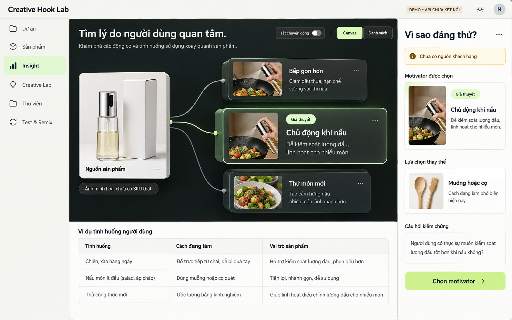
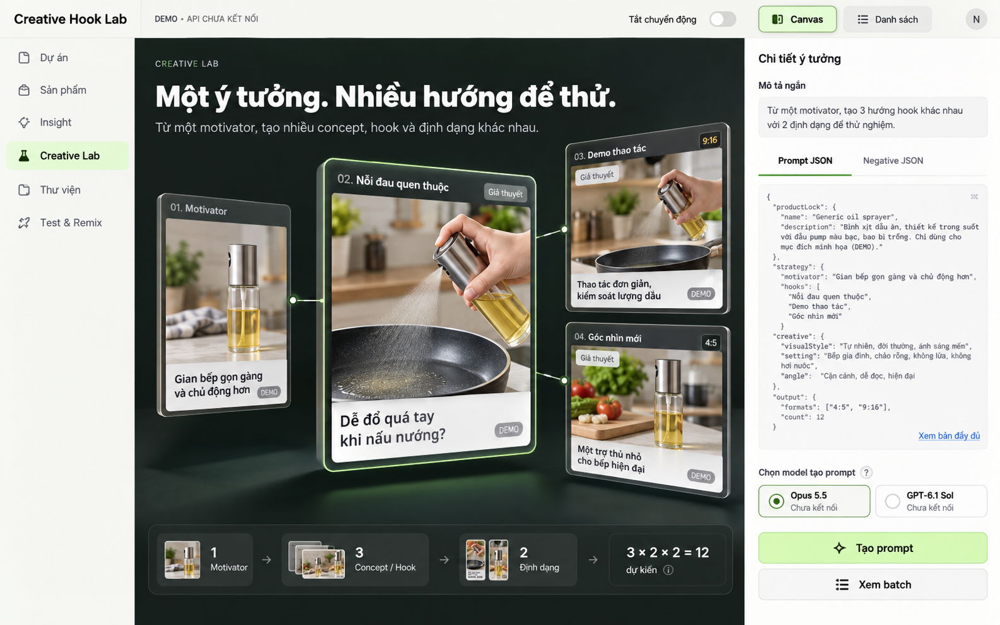
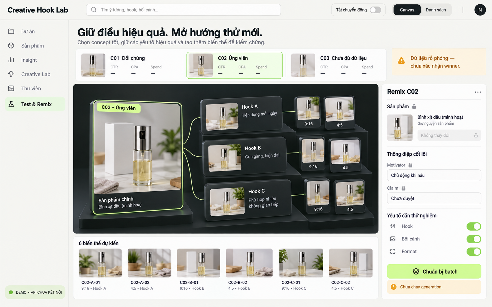
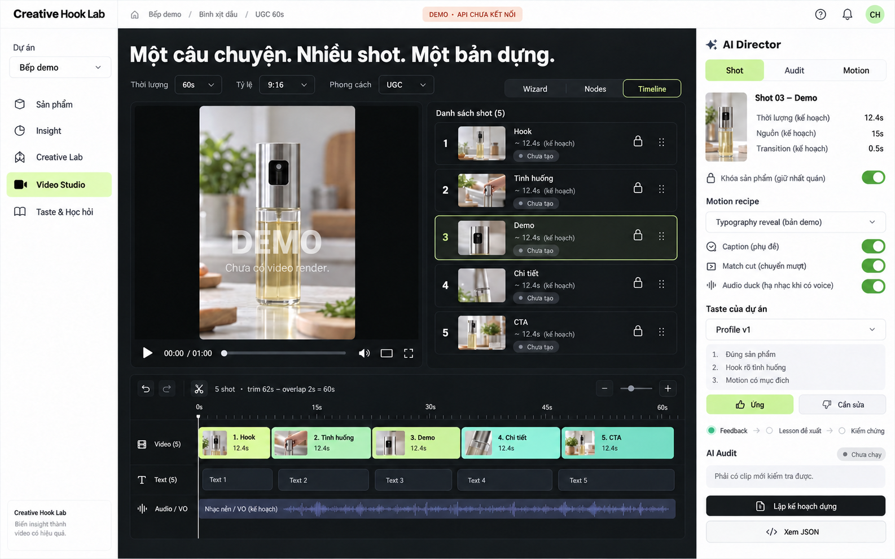

CREATIVE HOOK LAB · INTERNAL TOOL · SPATIAL STUDIO V3
Từ insight đến một hệ creative có thể học lại.
Hướng UI hiện đại dùng chiều sâu để đọc quan hệ sản phẩm, motivator, hook và nhánh remix. Wizard hỗ trợ chạy nhanh; node workflow dành cho tùy chỉnh; timeline giữ quyền quyết định thời gian của bản phim.
Bốn ảnh bên dưới là concept ImageGen, không phải ảnh chụp app đang vận hành. Prototype dùng CSS3D/2.5D và dữ liệu demo; có một số tương tác lập kế hoạch cục bộ. API, AI audit nội dung clip, render video, backend theo dự án và tự học qua agent server chưa được tích hợp. Không có mesh 3D của sản phẩm thật.
Chiều sâu có ý nghĩaNguồn → motivator → hook → nhánh phim. Nội dung nhập liệu, prompt và timeline giữ phẳng để đọc và chỉnh dễ.
Phim dài từ nhiều shotLập kế hoạch shot, reference continuity, trim, transition và audio trên một timeline. Thời lượng cuối trừ phần chồng; không nhân số clip một cách máy móc.
Học từ bằng chứngFeedback gắn với đúng dự án và phiên bản asset. Bài học được đề xuất, kiểm tra rồi mới trở thành hướng dẫn chủ động; có lịch sử và rollback.
01 / INSIGHT
Tìm lý do người dùng quan tâm
So sánh motivator trên bản đồ có chiều sâu; inspector giúp kiểm tra cách đang làm, nguồn và giả thuyết.

Sản phẩm, câu chữ và cảnh sử dụng đều minh họa. Không dùng chúng làm claim đã xác nhận hoặc hướng dẫn sử dụng cho SKU thật.
02 / CREATIVE LAB
Một ý tưởng, nhiều hướng để thử
Thẻ creative tách lớp để thấy nhánh nào xuất phát từ motivator nào, với prompt inspector luôn rõ và dễ chỉnh.

JSON trong ảnh chỉ là preview bố cục. Contract và ví dụ đầy đủ nằm trong thư mục contracts và examples.
03 / REMIX
Giữ điều hiệu quả, mở hướng thử mới
Nhánh remix giữ product/motivator/claim lock, chọn yếu tố được đổi và ghi lineage. Metric và candidate trong concept chưa có dữ liệu thị trường thật.

Trạng thái ứng viên và dữ liệu mô phỏng được ghi rõ; chưa xác nhận winner.
04 / VIDEO STUDIO
Nhiều shot, một câu chuyện liền mạch
Timeline 45/60 giây, nhiều tỷ lệ, AI Director, motion recipe và taste theo dự án. Ví dụ 60 giây dùng 5 segment × 12,4 giây − 4 overlap × 0,5 giây.

Thời lượng nguồn 15 giây chỉ là kế hoạch demo; capability thực do provider registry quyết định. Chưa có video render hoặc AI audit nội dung.